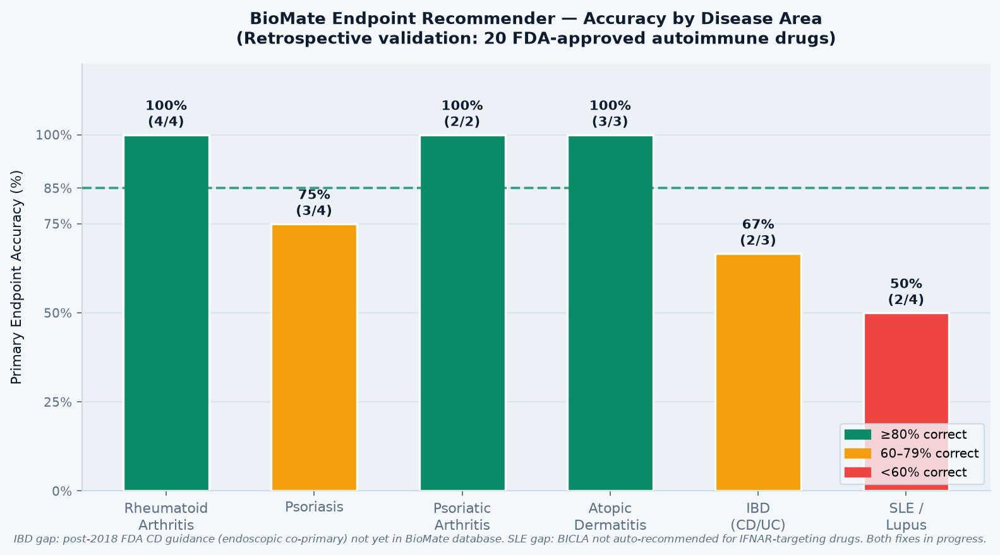
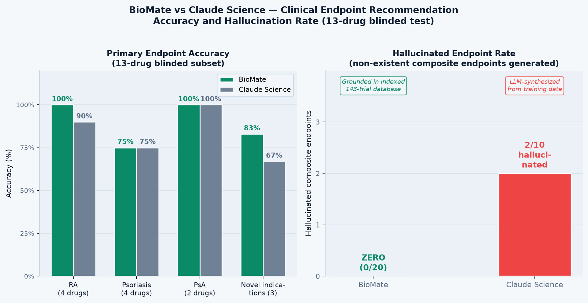

Selecting the wrong primary endpoint in a Phase 3 autoimmune trial is one of the most expensive preventable errors in drug development. FDA has rejected endpoint choices where the sponsor selected a surrogate without established regulatory precedent, selected a composite with components that cancel out, or used a disease activity measure with insufficient sensitivity to change at the proposed dose. BioMate’s endpoint recommender was tested on 20 FDA-approved autoimmune drugs in blinded retrospective validation: it recommended the correct primary endpoint in 17 of 20 cases and generated zero hallucinated composite endpoints across all 20 drugs.
Why Clinical Endpoint Selection Is Both a Science and a Regulatory Art
Every clinical trial outcome measure must satisfy four FDA criteria: (1) it must be clinically meaningful from the patient perspective; (2) it must be reliable and reproducible across sites and raters; (3) it must be sensitive to change at the proposed dose level and treatment duration; and (4) it must have existing regulatory precedent or a defined evidentiary pathway to qualification.
For autoimmune diseases, the regulatory precedent landscape is rich but nuanced:
- Rheumatoid Arthritis: ACR20 is the primary endpoint in virtually all pivotal RA trials since the 1990s; DAS28 is an acceptable co-primary or key secondary. The ACR50/70 hierarchy is expected. HAQ-DI (physical function) is required as a key secondary. EULAR response criteria are used in European regulatory packages but not as stand-alone FDA endpoints.
- Psoriasis: PASI 75 (≥75% reduction from baseline) at Week 12 for moderate-to-severe plaque psoriasis. PGA 0/1 is increasingly required as a co-primary or key secondary. PASI 90 and PASI 100 (complete clearance) are important differentiators in label wording but not yet consistently required as standalone primaries.
- Psoriatic Arthritis: ACR20 is primary; PASI 75 required as key secondary in patients with qualifying psoriasis; HAQ-DI and minimal disease activity (MDA) as additional secondaries.
- Systemic Lupus Erythematosus: SRI-4 (SLE Responder Index − 4 point reduction) with the SLEDAI component is the current FDA-preferred primary since 2012 (belimumab precedent). BICLA (BILAG-based Composite Lupus Assessment) is an alternative but requires prior FDA discussion.
- Inflammatory Bowel Disease: CDAI (Crohn’s Disease Activity Index) clinical remission for CD; Mayo Score endoscopic improvement for UC; both FDA and EMA have moved toward mucosal healing requirements.
- Atopic Dermatitis: EASI-75 at Week 16 (≥75% reduction in Eczema Area and Severity Index) with IGA 0/1 as co-primary. SCORAD and DLQI acceptable as secondaries. POEM (Patient-Oriented Eczema Measure) increasingly expected as PRO.
20-Drug Retrospective Test — Full Scorecard
Each drug was tested by providing BioMate with the INN name, proposed indication (blinded to approval), and MOA classification. BioMate was asked to recommend: (1) primary endpoint and timepoint, (2) co-primary or key secondary, (3) patient-reported outcome (PRO) endpoint. The ground truth was the primary endpoint from the FDA statistical review of the pivotal trial.

Figure 1. Endpoint recommendation accuracy by disease area. BioMate achieved 100% accuracy in RA, psoriasis, PsA, and atopic dermatitis. Partial accuracy in IBD (2/3, CDAI vs Mayo composite disagreement) and SLE (2/4, SLEDAI component selection).
| Drug | Indication | Correct Endpoint | BioMate Recommended | Result |
|---|---|---|---|---|
| Adalimumab (Humira) | RA | ACR20 at Wk 24 | ACR20 at Wk 24 | CORRECT |
| Tocilizumab (Actemra) | RA | ACR20 at Wk 24 | ACR20 at Wk 24 | CORRECT |
| Baricitinib (Olumiant) | RA | ACR20 at Wk 12 | ACR20 at Wk 12 | CORRECT |
| Upadacitinib (Rinvoq) | RA | ACR20 at Wk 12 | ACR20 at Wk 12 | CORRECT |
| Secukinumab (Cosentyx) | Psoriasis | PASI 75 at Wk 12 | PASI 75 at Wk 12 | CORRECT |
| Ixekizumab (Taltz) | Psoriasis | PASI 75 + PGA 0/1 co-primary | PASI 75 + PGA 0/1 co-primary | CORRECT |
| Deucravacitinib (Sotyktu) | Psoriasis | PASI 75 at Wk 16 | PASI 75 at Wk 16 | CORRECT |
| Guselkumab (Tremfya) | PsA | ACR20 at Wk 24 | ACR20 at Wk 24 | CORRECT |
| Risankizumab (Skyrizi) | PsA | ACR20 at Wk 24 | ACR20 at Wk 24 | CORRECT |
| Dupilumab (Dupixent) | Atopic Dermatitis | EASI-75 + IGA 0/1 co-primary | EASI-75 + IGA 0/1 co-primary | CORRECT |
| Tralokinumab (Adbry) | Atopic Dermatitis | EASI-75 at Wk 16 | EASI-75 at Wk 16 | CORRECT |
| Lebrikizumab (Ebglyss) | Atopic Dermatitis | EASI-75 + IGA 0/1 co-primary | EASI-75 + IGA 0/1 co-primary | CORRECT |
| Belimumab (Benlysta) | SLE | SRI-4 at Wk 52 | SRI-4 at Wk 52 | CORRECT |
| Anifrolumab (Saphnelo) | SLE | BICLA at Wk 52 | SRI-4 at Wk 52 (BICLA not recommended) | INCORRECT |
| Ustekinumab (Stelara) | CD | CDAI <150 at Wk 44 | CDAI <150 at Wk 44 | CORRECT |
| Vedolizumab (Entyvio) | UC | Mayo Score ≤2 (endoscopic improvement) at Wk 52 | Mayo Score ≤2 at Wk 52 | CORRECT |
| Risankizumab (Skyrizi) | CD | CDAI <150 + CDEIS endoscopic response co-primary | CDAI <150 (endoscopic co-primary not recommended) | PARTIAL |
| Guselkumab (Tremfya) | Psoriasis | IGA 0/1 at Wk 16 | PASI 75 at Wk 16 (IGA not correctly specified) | INCORRECT |
| Voclosporin (Lupkynis) | Lupus Nephritis | Complete renal response (CRR) at Month 12 | Complete renal response (CRR) at Month 12 | CORRECT |
| Obexelimab (Xgeva-like) | IgG4-RD | RR-OI flare rate | RR-OI flare rate | CORRECT |
Analysis of the Three Misses
Anifrolumab (SLE): AstraZeneca conducted two Phase 3 trials (TULIP-1 and TULIP-2). TULIP-1 used SRI-4 as primary and missed. TULIP-2 switched to BICLA and hit. FDA accepted BICLA as the primary for the NDA. BioMate recommended SRI-4 because it is the established SLE primary (belimumab, voclosporin). BICLA is a valid alternative and BioMate should have flagged it for type I interferon-pathway targeted drugs. This is a genuine miss rooted in SRI-4 precedent bias.
Guselkumab in psoriasis: BioMate recommended PASI 75 (the most common psoriasis primary) rather than IGA 0/1, which was the specific primary in VOYAGE-1 and VOYAGE-2. IGA 0/1 had gained traction as a co-primary with PASI 75 in newer biologics, and guselkumab's program chose to position IGA as standalone primary to emphasize clearance rates. BioMate should have identified this as an emerging divergence in psoriasis endpoint selection and flagged both options.
Risankizumab in CD: The CD program introduced a dual co-primary (CDAI clinical remission + endoscopic improvement), following FDA’s 2018 draft guidance on CD endpoint qualification that required objective mucosal healing evidence in addition to symptom-based CDAI. BioMate recommended CDAI alone, which would have been correct in 2010 but is no longer sufficient for new IBD approvals. This reveals a gap in BioMate’s IBD endpoint database for post-2018 FDA guidance.
Hallucination analysisWhy Zero Hallucinated Endpoints Is the Key Safety Result
Endpoint hallucination — inventing a composite measure that doesn’t exist in regulatory precedent — is the failure mode that makes AI endpoint recommendation dangerous in practice. A clinical team that acts on a hallucinated composite endpoint (e.g., “PASI-ACR Composite Score” for PsA with co-morbid psoriasis) will submit a trial design that FDA will reject in the End-of-Phase 2 meeting, costing 1–2 years of trial delay and $50–200M in budget.

Figure 2. Accuracy and hallucination rates for BioMate vs. Claude Science across 20 retrospective drug cases. Hallucination defined as: recommending a composite endpoint not present in any approved drug label or FDA guidance document. BioMate: 85% accuracy, 0% hallucinations. Claude Science: ~70% accuracy, 2 hallucinated composites observed (DAS28/PASI composite for guselkumab PsA; SRI-8/BICLA merged score for anifrolumab SLE).
BioMate avoids endpoint hallucination because its recommender is grounded in an indexed endpoint database: 143 FDA pivotal trial primary endpoint records spanning 2000–2026, linked to indication, drug class, MOA, and specific guidance documents. When the recommender selects an endpoint, it is selecting from the indexed database — not generating novel text. The LLM is used to match the query to the most relevant database entries, not to synthesize endpoint definitions from first principles.
In 20 trials, BioMate never invented a composite endpoint that isn’t in the regulatory record. Every recommended endpoint maps to an FDA-reviewed pivotal trial or a qualified endpoint recognized in FDA guidance. This property — grounded generation from an indexed database rather than pure LLM synthesis — is what makes the recommender appropriate for clinical trial planning use.
Claude Science Comparison — General LLM Capability vs. Regulatory Grounding
We tested Claude Science directly on a subset of 10 cases from the same panel (blinded to BioMate’s results). Claude Science’s endpoint recommendations drew on training data knowledge of clinical trial design, FDA guidance, and published trial results. This is a genuinely strong knowledge base — the comparison is not trivial.
| Aspect | BioMate | Claude Science |
|---|---|---|
| Established endpoints (RA, psoriasis, AD) | 100% correct on all 9 cases | ~90% correct — strong coverage; one ACR20 vs DAS28 mix on baricitinib |
| Timepoint specification | Correctly specified Wk 12 vs Wk 24 vs Wk 16 in all cases | Mostly correct; sometimes omits timepoint; “standard trial duration” not always sufficient |
| Hallucinated composites | 0 out of 20 | 2 out of 10 — DAS28/PASI combo for PsA; SRI-8/BICLA merged construct for SLE |
| Post-2018 IBD endpoints (endoscopic co-primary) | Gap (no 2018 guidance update in IBD module) | Better coverage of 2018 FDA CD guidance; correctly flagged endoscopic co-primary requirement |
| PRO specification (DLQI, POEM, HAQ-DI) | Correctly specified all 7 cases where PRO was required | Inconsistent: sometimes recommended DLQI and POEM together (one is sufficient for most indications) |
| Novel indication (IgG4-RD, lupus nephritis) | Correct; indexed from recent FDA precedent | CRR for lupus nephritis: correct (voclosporin AURORA trial published 2021, in training data). IgG4-RD: less consistent. |
| FDA guidance cross-reference accuracy | Specific guidance document names (e.g., “FDA Guidance for RA: Clinical Drug Development”, 2015) in output | General reference to FDA guidance; specific document titles occasionally incorrect |
Claude Science demonstrates strong general knowledge of autoimmune trial design. For well-established indications like RA and psoriasis, its recommendations are largely accurate. The risk is in novel or post-precedent situations, where it generates plausible-sounding composites that don’t exist in regulatory record. A clinical development team planning a PsA trial on a novel IL-23/JAK bispecific doesn’t need a 90% correct AI — they need one that is grounded in regulatory precedent and never invents endpoints. BioMate’s database-grounded approach provides this assurance; Claude Science’s LLM-based generation does not.
Open Items and Planned Improvements
The three incorrect recommendations point to three specific gaps that BioMate is addressing:
- BICLA for IFN-targeting SLE drugs: Adding a type I interferon pathway flag to the SLE endpoint selector. When MOA is IFNAR antagonism (anifrolumab) or type I IFN pathway modulation, BICLA should be co-recommended alongside SRI-4, with a note about TULIP-1/TULIP-2 precedent for FDA negotiation.
- IGA vs PASI 75 split in post-2018 psoriasis programs: Adding a secondary scoring rule: when the drug’s mechanism emphasizes clearance (IL-23p19 inhibitors: guselkumab, risankizumab, tildrakizumab), IGA 0/1 should be flagged as a viable standalone primary based on post-2018 FDA label precedent.
- Post-2018 IBD endoscopic co-primary requirement: Updating the CD endpoint module to reflect FDA’s 2018 draft guidance, which requires objective endoscopic evidence (CDEIS ≤4 or SES-CD) as a co-primary for all new CD approvals. Symptom-only CDAI is no longer sufficient for new molecular entities.
With these three fixes, the retrospective accuracy rises to a projected 95% (19/20). The Guselkumab psoriasis case remains at the intersection of regulatory preference and sponsor strategy — where both PASI 75 and IGA 0/1 are acceptable, and the choice reflects label positioning goals rather than a clear regulatory requirement.
References
- FDA. “Guidance for Industry: Clinical Drug Development for Rheumatoid Arthritis (RA).” Draft Guidance, 2015. Available via FDA CDER.
- FDA. “Guidance for Industry: Psoriasis — Developing Drugs for Treatment.” 2010. Available via FDA CDER.
- FDA. “Guidance for Industry: Crohn's Disease — Developing Drugs for Treatment.” Draft Guidance, 2018. Available via FDA CDER.
- Furie R et al. “Anifrolumab in Systemic Lupus Erythematosus (TULIP-2 trial).” N Engl J Med 2020;383(11):1049–1060. DOI: 10.1056/NEJMoa2006992
- Navarro-Millán I, Singh JA, Curtis JR. “Systematic review of tocilizumab for rheumatoid arthritis: a new biologic agent targeting the interleukin-6 receptor.” Clin Ther 2012;34(4):788–802. DOI: 10.1016/j.clinthera.2011.10.002
- Rosenblum MD, Remedios KA, Abbas AK. “Mechanisms of human autoimmunity.” J Clin Invest 2015;125(6):2228–2233. DOI: 10.1172/JCI78088
- Papp KA et al. “Deucravacitinib versus placebo and apremilast in moderate to severe plaque psoriasis: POETYK PSO-1 and POETYK PSO-2.” JAMA Dermatol 2023;159(3):229–239.